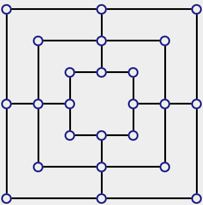

Instruções
Tabuleiro

Trilha é um jogo de tabuleiro para dois jogadores.
Joga-se num tabuleiro de quadrados concêntricos.
Normalmente são 3 quadrados.
Os quadrados estão ligados por linhas no meio dos lados.
Cada quadrado tem 8 casas, os cantos e o meio dos lados.
As casas são marcadas com uma circunferência.
Outros Tabuleiros

Outro número de quadrados é possível.
O número de casas por quadrado é sempre 8.
As ligações entre quadrados são nos centros dos lados.
No exemplo acima o tabuleiro tem apenas 2 quadrados.
Mas poderia ter mais de 3, como 4 ou 5.
Peças

Num tabuleiro com n quadrados, cada jogador tem 3 * n peças.
Cada jogador joga com peças de cor diferente das do adversário.
Todas as peças estão sempre visíveis, no tabuleiro ou fora.
No tabuleiro as peças são colocadas nas casas.
Peças fora do tabuleiro são agrupadas por cor nos lados esquerdo e direito do tabuleiro.
A imagem mostra um tabuleiro 3 x 3 na situação inicial.
Moinhos

Uma sequência de 3 peças da mesma cor é um moinho.
As peças dum moinho têm de estar ao longo duma única linha.
Em linhas verticais ou horizontais, nunca em diagonais.
As peças no tabuleiro acima fazem parte de moinhos, exceto as dos cantos inferior direito (destacadas a laranja).
Regras Básicas

Jogadores escolhem uma cor e decidem quem joga primeiro.
Inicialmente, o tabuleiro está vazio.
O jogo tem 2 fases:
Fase 1 - Pôr as peças (drop).
Fase 2 - Mover as peças (move).
No exemplo acima, o tabuleiro está entre as 2 fases.
Por Peças

Jogadores põem alternadamente uma peça sua numa casa livre.
Podem ser criados moinhos (mas não é vantajoso).
Quando todas as peças estão colocadas, termina esta fase.
No exemplo acima, cada jogador já colocou uma peça.
Mover Peças

Esta fase começa logo após todas as peças estarem colocadas.
Cada jogador move alternadamente uma peça da sua cor.
Uma peça só pode ser movida para uma casa contígua.
Casas têm de estar ligadas por uma linha vertical ou horizontal.
No exemplo acima, a peça azul no canto superior esquerdo pode mover-se para a casa destacada a laranja.
Capturar Peças

Criando um moinho, pode capturar uma peça do adversário.
Neste caso, remove uma peça do adversário à sua escolha.
Só uma peça é removida por jogada.
Uma peça pode retornar à posição da jogada anterior e voltar a formar um moinho na jogada seguinte.
No exemplo, as peças azuis no topo formaram um moinho e o jogador pode capturar a peça vermelha destacada.
Movimento Livre

Inicia-se quando um jogador tiver apenas 3 peças.
Esse jogador passa a poder jogar para qualquer casa livre.
Não está restrito a jogar para casas contíguas.
No exemplo acima, as peças azuis podem jogar livremente e, com a jogada destacada, farão um moinho.
Fim do Jogo

O jogo termina com a derrota do/a jogador(a) que tiver apenas 2 peças,
um empate se não for possível realizar uma jogada válida,
ambos os jogadores tiverem 3 peças e, em 10 jogadas, não houver um vencedor.
No exemplo acima, ganham as peças azuis.
Tec-web-project